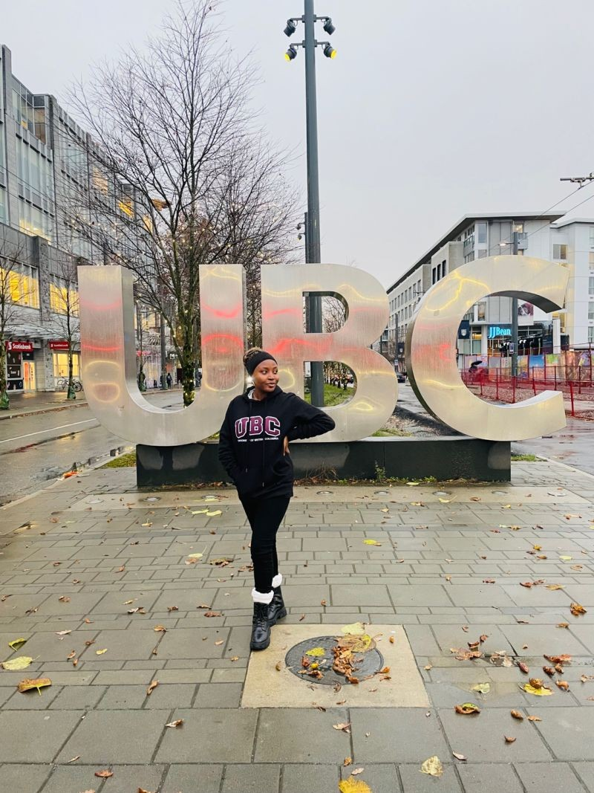

Pharmacy and patient care.
A Bachelor of Pharmacy from the University of Ilorin, followed by work in pharmacy practice, medication safety and healthcare programmes.
About Anu

Pharmacist · Researcher · Mentor
My professional journey began in pharmacy in Nigeria. It gave me a grounding in patient care and a lasting interest in how healthcare systems shape people’s everyday experiences.
That interest took me to the University of British Columbia for an MSc in Pharmaceutical Sciences. My research explored the social and care networks of older adults, bringing together the relationships, support systems and evidence that influence wellbeing.
Today, my work spans healthcare improvement, project delivery, research and community engagement in Canada. I’m interested in the practical work of bringing people together, translating evidence into action and improving access to care.
Mentorship is part of that same commitment. I want to help others navigate uncertainty, recognise their strengths and explore what their next chapter could look like.
Explore mentorship ↗The journey so far
A Bachelor of Pharmacy from the University of Ilorin, followed by work in pharmacy practice, medication safety and healthcare programmes.
An MSc in Pharmaceutical Sciences and research into social and care networks among community-dwelling older adults.
Work bringing health-system and community partners together, alongside youth engagement, leadership and mentorship.
Photography & story
Your own photographs can make the story more personal, beyond the studio portraits.
